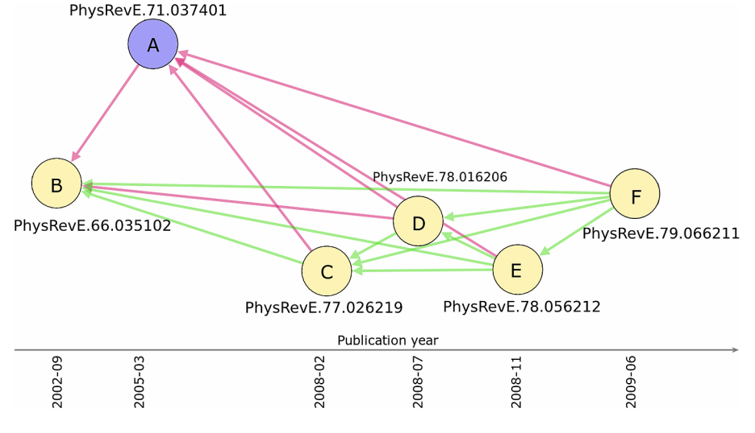

Homophily and missing links in citation networks

Citation networks have been widely used to study the evolution of science through the lenses of the underlying patterns of knowledge flows among academic papers, authors, research sub-fields, and scientific journals. Here we focus on citation networks to cast light on the salience of homophily, namely the principle that similarity breeds connection, for knowledge transfer between papers. To this end, we assess the degree to which citations tend to occur between papers that are concerned with seemingly related topics or research problems. Drawing on a large data set of articles published in the journals of the American Physical Society between 1893 and 2009, we propose a novel method for measuring the similarity between articles through the statistical validation of the overlap between their bibliographies. Results suggest that the probability of a citation made by one article to another is indeed an increasing function of the similarity between the two articles. Our study also enables us to uncover missing citations between pairs of highly related articles, and may thus help identify barriers to effective knowledge flows.
By quantifying the proportion of missing citations, we conduct a comparative assessment of distinct journals and research sub-fields in terms of their ability to facilitate or impede the dissemination of knowledge. Findings indicate that Electromagnetism and Interdisciplinary Physics are the two sub-fields in physics with the smallest percentage of missing citations. Moreover, knowledge transfer seems to be more effectively facilitated by journals of wide visibility, such as Physical Review Letters, than by lower-impact ones. Our study has important implications for authors, editors and reviewers of scientific journals, as well as public preprint repositories, as it provides a procedure for recommending relevant yet missing references and properly integrating bibliographies of papers.